Exam weight Low
Course Learning Outcomes
CLO1: Recognize Software Engineering principles, life cycle phases, processes, and activities.
CLO3: Demonstrate an understanding of professional and ethical responsibilities in Software Engineering
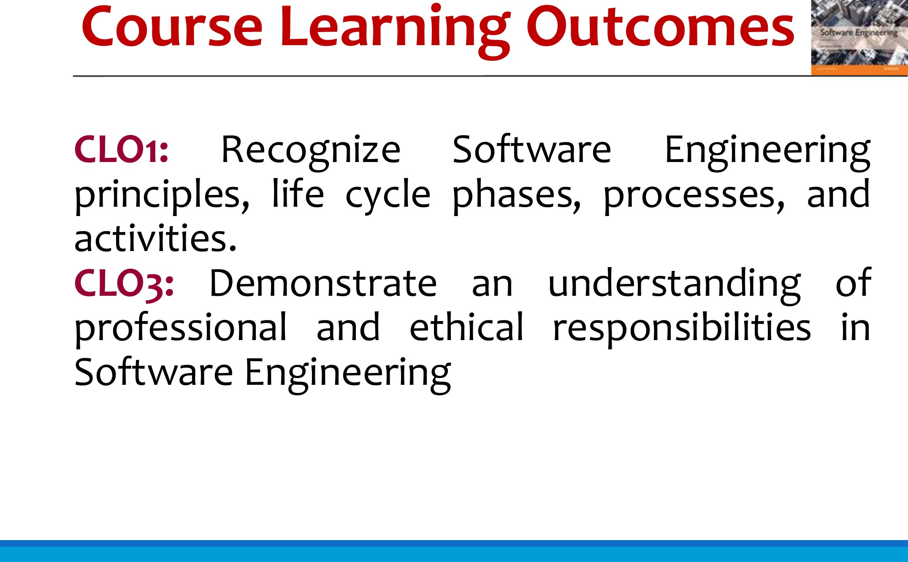
2
Exam weight ●○○ Low
Topics covered
- Professional software development
- What is meant by software engineering.
- Software and its various types
- Software Engineering - A Layered Technology
- Software engineering ethics
- A brief introduction to ethical issues that affect software engineering.
- Case studies
- An introduction to three examples that are used in later chapters in the book.
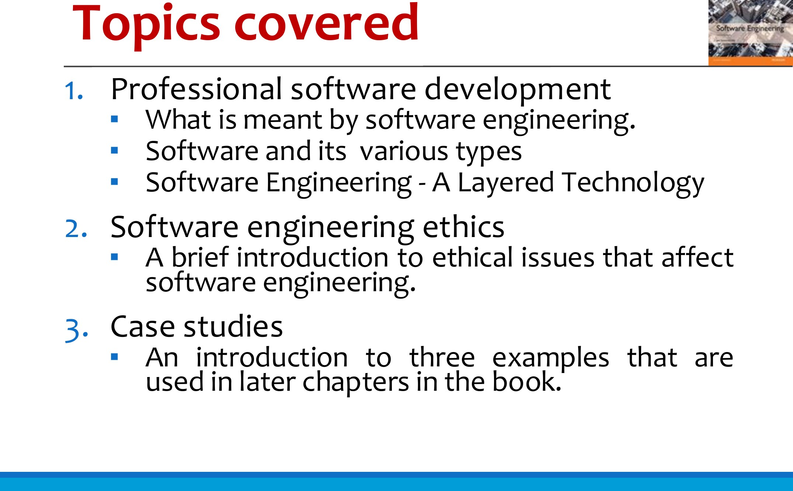
3
Exam weight ●○○ Low
★ Past exam
Software engineering
The economies of ALL developed nations are dependent on software.
More and more systems are software controlled.
Software Engineering is concerned with theories, methods and tools for professional software development.
Expenditure
on
software
represents
a
Gross national
significant fraction of GNP( products) in all developed countries.
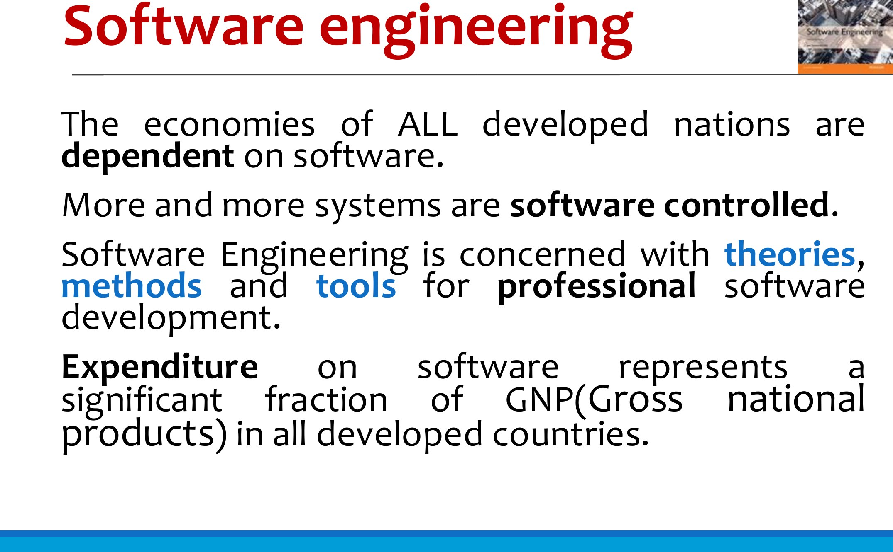
4
Exam weight ●●● High
- Software engineering: an engineering discipline concerned with ALL aspects of software production, from specification to maintenance.
Asked in a real exam
🎯 How this can come up · 1 question
MCQ
The primary focus of software engineering is:
Correct: Software production and maintenance.
Software costs
Software costs often dominate computer system costs. The costs of software on a PC are often greater than the hardware cost.
Software costs more to maintain than it does to develop. For systems with a long life, maintenance costs may be several times development costs.
Software engineering is concerned with cost-effective software development.
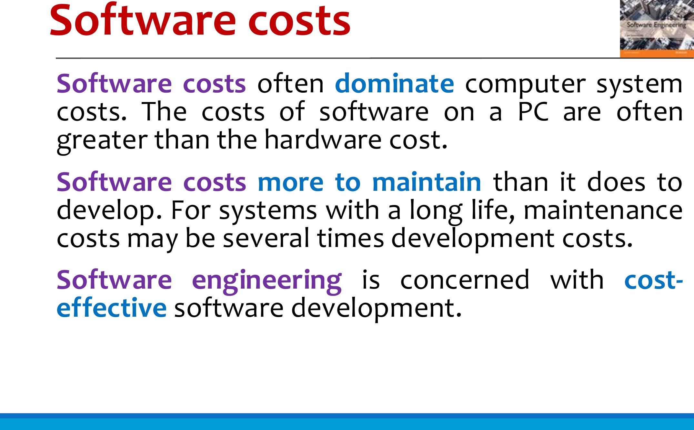
5
Exam weight ●○○ Low
- Software costs more than hardware, and maintaining it costs more than developing it.
Software Project Failure
Increasing system complexity
- As software engineering techniques improve, we can create larger and more advanced systems. This has changed expectations so systems now need to be developed faster, handle greater complexity, and systems have to have new capabilities that were previously thought to be impossible.
Failure to use software engineering methods
- It is fairly easy to write computer programs without using software engineering methods and techniques. Many companies have drifted into software development as their products and services have evolved. They do not use software engineering methods in their everyday work. Consequently, their software is often more expensive and less reliable than it should be.
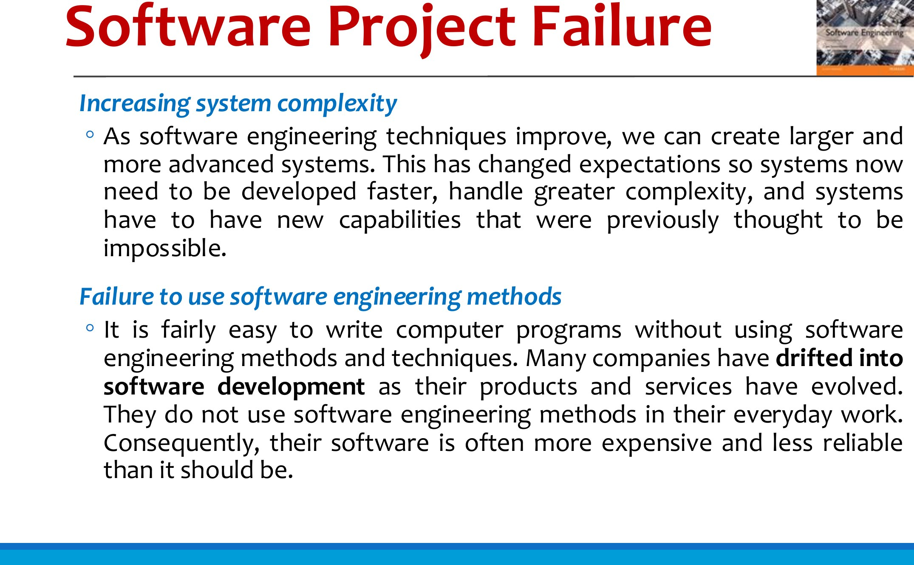
6
Exam weight ●○○ Low
Professional Software Development
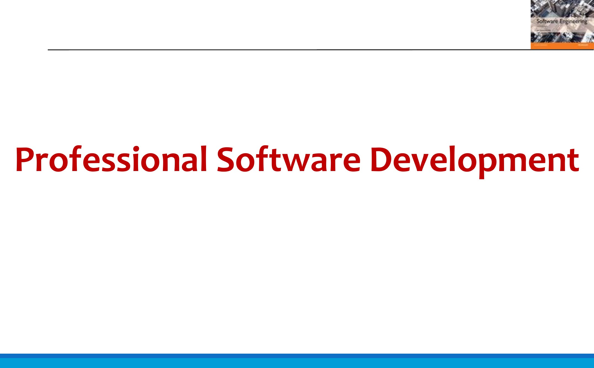
7
Exam weight ●○○ Low
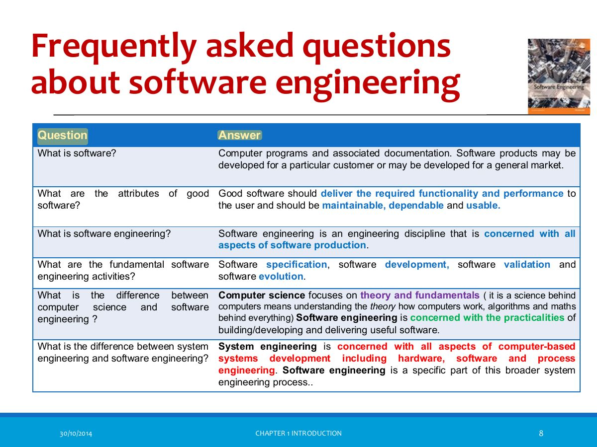
Exam weight ●○○ Low
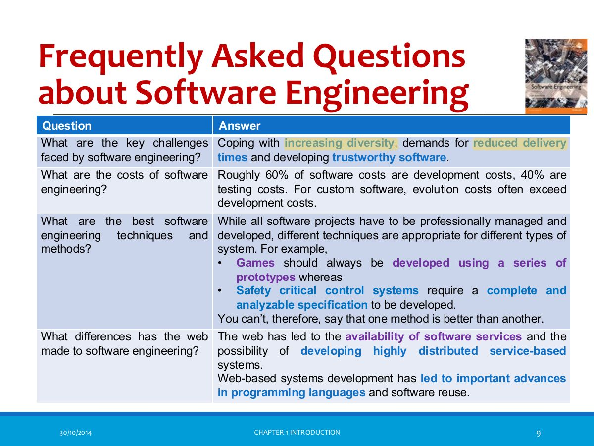
Exam weight ●○○ Low
★ Past exam
Software Products
Generic products
- Stand-alone systems that are marketed and sold to any customer who wishes to buy them.
- Examples – PC software such as graphics programs, project management tools; CAD software; software for specific markets such as appointments systems for dentists.
Customized products
- Software that is commissioned by a specific customer to meet their own needs.
- Examples – embedded control systems, air traffic control software, traffic monitoring systems.
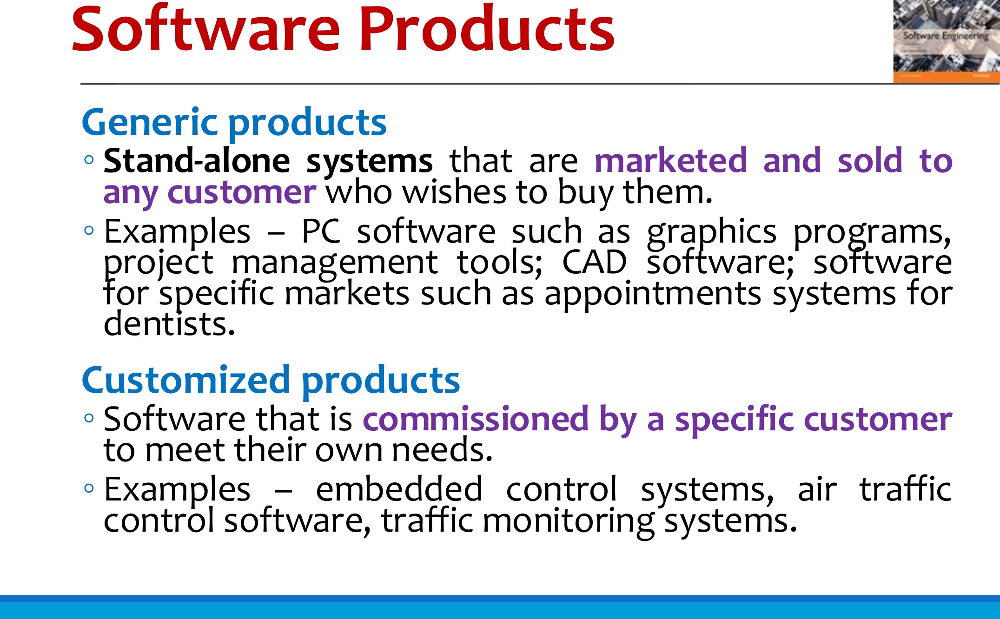
10
Exam weight ●●● High
- Generic products: sold on the open market; the DEVELOPER owns the specification. Customized (bespoke): built for one customer, who owns the specification.
Asked in a real exam
🎯 How this can come up · 1 question
MCQ
For a generic software product, the specification is owned by:
Correct: The developer.
Product specification
A detailed document describing features, functions, and requirements of a product to guide its design and development
Generic products Specification
- The specification of what the software should do is owned by the software developer and decisions on software change are made by the developer.
Customized products Specification
- The specification of what the software should do is owned by the customer for the software and they make decisions on software changes that are required.
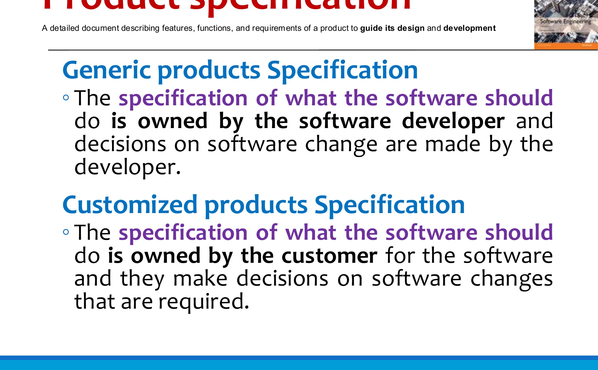
11
Exam weight ●○○ Low
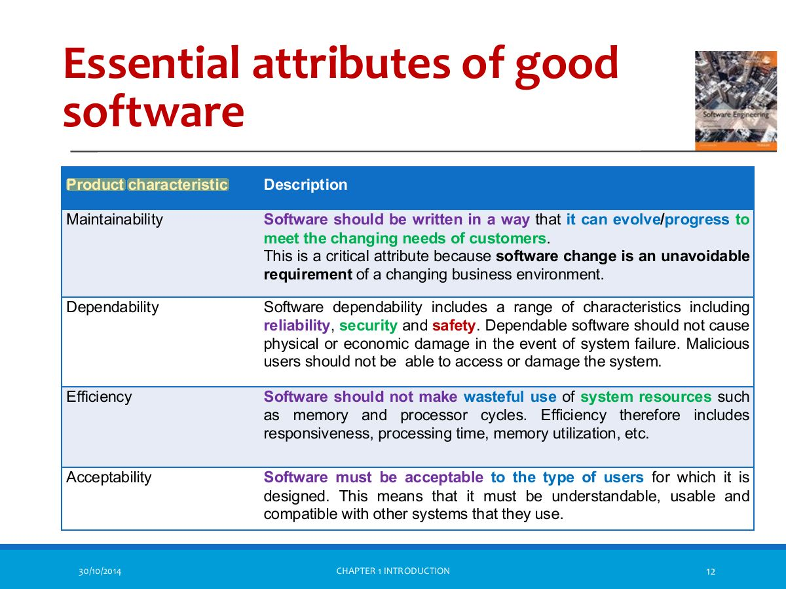
Exam weight ●●● High
- Essential attributes: maintainability, dependability and security, efficiency, acceptability.
🎯 How this can come up · 1 question
MCQ
Which is NOT one of the essential attributes of good software?
Correct: Popularity.
Software Engineering
Software engineering is an Engineering discipline that is concerned with All aspects of software production from the early stages of system specification through to maintaining the system after it has gone into use.
Engineering discipline
- Using appropriate theories and methods to solve problems bearing in mind organizational and financial constraints.
All aspects of software production
- Not just technical process of development. Also project management and the development of tools, methods etc. to support software production.
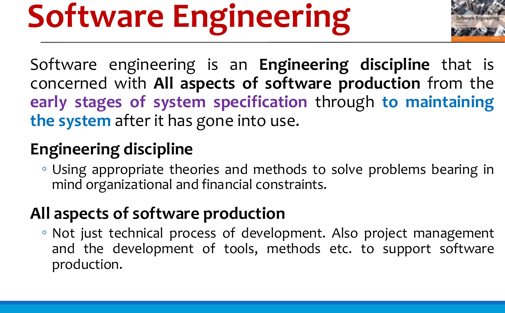
13
Exam weight ●○○ Low
Importance of Software Engineering
More and more, individuals and society rely on advanced software systems. We need to be able to produce
reliable
and
trustworthy
systems
economically and quickly.
It is usually cheaper, in the long run, to use software engineering methods and techniques for software systems rather than just write the programs as if it was a personal programming project. For most types of system, the majority of costs are the costs of changing the software after it has gone into use.
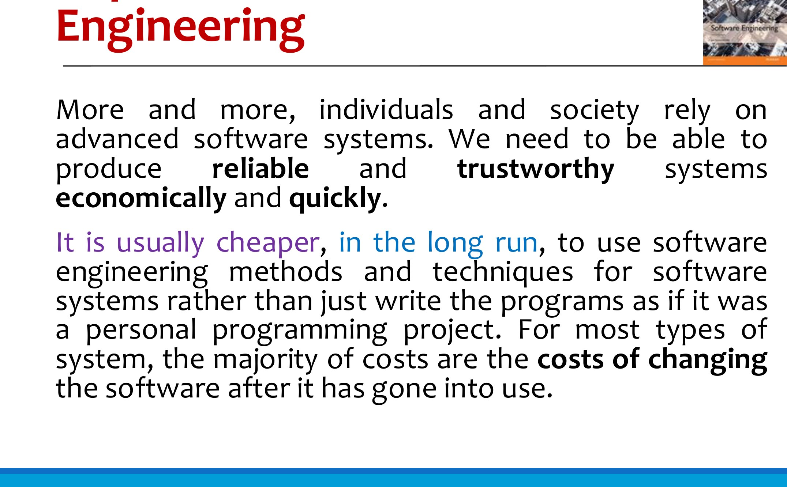
14
Exam weight ●○○ Low
What is unique about software?
- Software is developed or engineered, it is not manufactured in the classical sense.
- Unlike physical products (like cars or toys) made in factories, software isn’t put together in an assembly line. Instead, it’s created through a design and coding process, which involves solving problems and writing code.
- Software does not ‘wear out” because it doesn’t age physically. However, It can get worse/deteriorates over the time
- Means software can have problems that build up over time (like bugs or poor performance) due to how maintained and updated. This can make it seem it’s worse, even though not physically aging. it’s
- Industry is moving towards component-based construction ( where software still many projects are built is made from reusable parts like Lego pieces for coding) from scratch or heavily customized for specific purposes. This means creating software can still take a lot of effort and planning, similar to making a custom-designed house.
- Software is typically not mass produced
- Once software is created, you can copy and share it. This is different from physical products, where each copy needs its own materials and effort to produce.
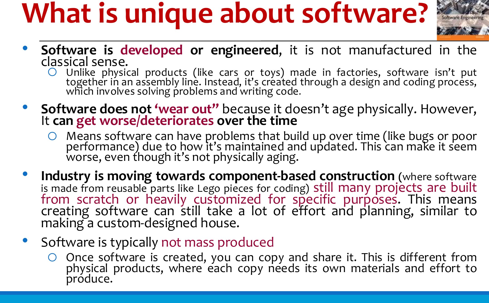
15
Exam weight ●○○ Low
★ Past exam
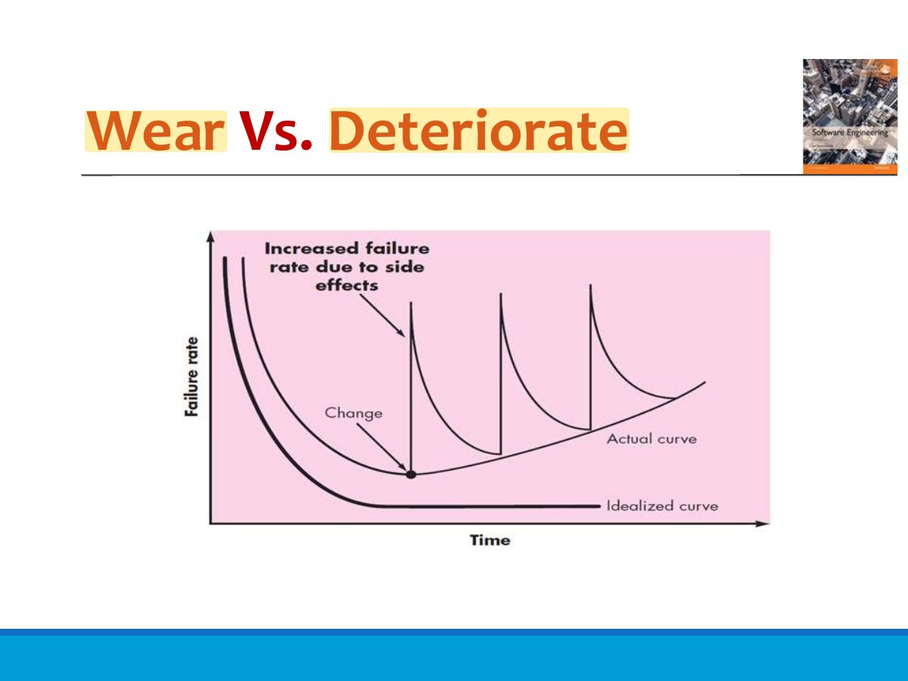
Exam weight ●●● High
- Hardware WEARS OUT (bathtub curve); software doesn’t wear out but DETERIORATES as changes introduce defects.
Exam trapSoftware deteriorates; it does NOT wear out.
Asked in a real exam
🎯 How this can come up · 1 question
True / False
Software does not deteriorate over time; it wears out.
False. It is the other way round.
General issues that affect software
Heterogeneity
- Increasingly, systems are required to operate as distributed systems across networks that include different types of computer and mobile devices.
Business and social change
- Business and society are changing quickly as emerging economies develop and new technologies become available. They need to be able to change their existing software and to rapidly develop new software.
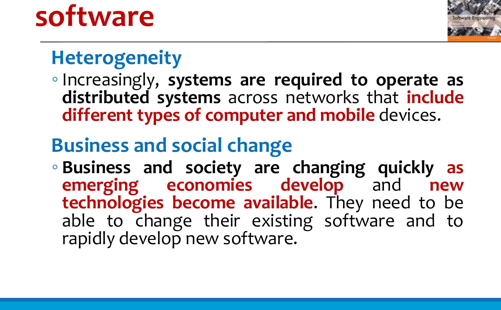
17
Exam weight ●○○ Low
- Issues affecting most software: heterogeneity, business and social change, security and trust, scale.
General issues that affect software
Security and trust
- As software is intertwined with all aspects of our lives, it is essential that we can trust that software.
Scale
- Software has to be developed across a very wide range of scales, from very small embedded systems in portable or wearable devices through to Internet-scale, cloud-based systems that serve a global community.
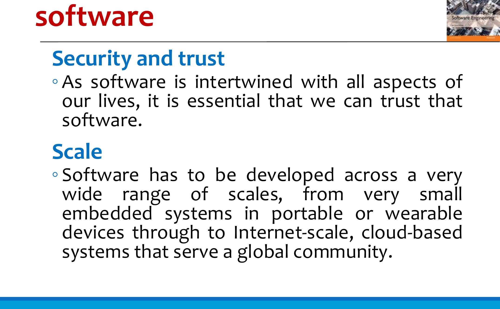
18
Exam weight ●○○ Low
Software engineering diversity
There are many different types of software system and there is no universal set of software techniques that is applicable to all of these.
The software engineering methods and tools used depend on the type of application
being
developed,
the
requirements of the customer and the background of the development team.
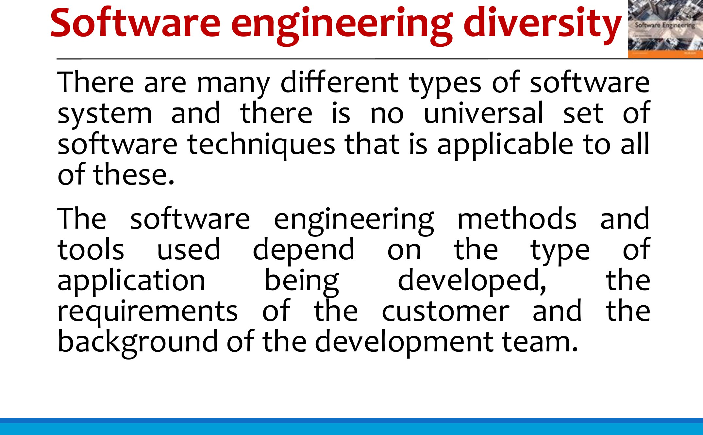
19
Exam weight ●○○ Low
Application types
Stand-alone applications
- These are application systems that run on a local computer, such as a PC. They include all necessary functionality and do not need to be connected to a network. e.g. Microsoft Word
Interactive transaction-based applications
- Applications that execute on a remote computer and are accessed by users from their own PCs or terminals. These include web applications such as e-commerce applications. e.g. Amazon, Online Banking Systems,
Embedded control systems
- These are software control systems that control and manage hardware devices. Numerically, there are probably more embedded systems than any other type of system. e.g. Smart Thermostats to control heating and cooling
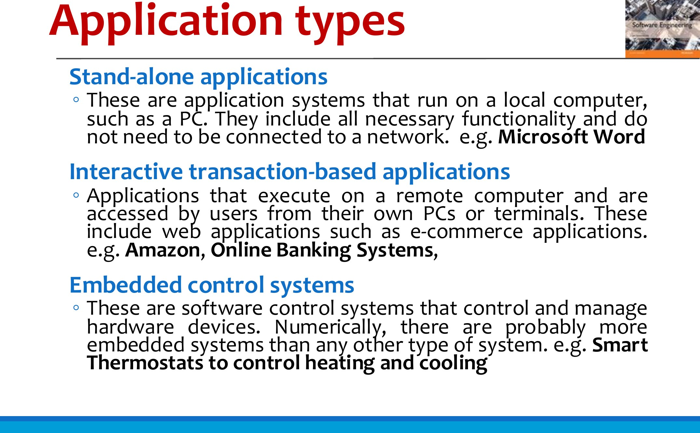
20
Exam weight ●○○ Low
- Application types: stand-alone, interactive transaction-based, embedded control, batch, entertainment, modeling and simulation, data collection, systems of systems.
Application Types
Batch processing systems
- These are business systems that are designed to process data in large batches. They process large numbers of individual inputs to create corresponding outputs. e.g. Payroll system.
Entertainment systems
- These are systems that are primarily for personal use and which are intended to entertain the user. e.g. Streaming Services with Platforms like Netflix or Spotify.
Systems for modeling and simulation
- These are systems that are developed by scientists and engineers to model physical processes or situations, which include many, separate, interacting objects.
- e.g. Weather Simulation Models that simulate weather patterns to predict future weather conditions and study climate change
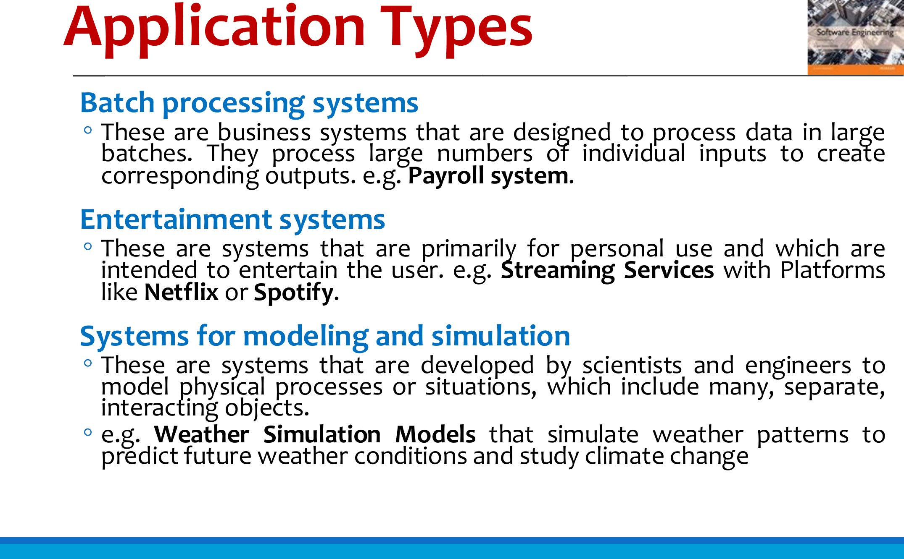
21
Exam weight ●○○ Low
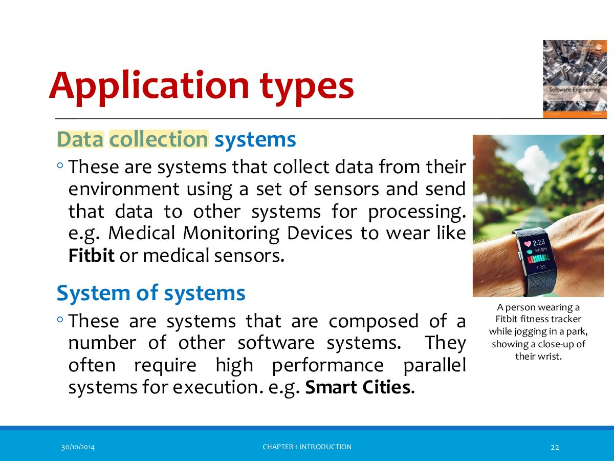
Exam weight ●○○ Low
Software Engineering Fundamentals
Some fundamental principles apply to all types of software system, irrespective of the development techniques used:
- Systems should be developed using a managed and understood Development process. Of course, different processes are used for different types of software.
- Dependability and Performance are important for all types of system.
- Understanding and managing the software Specification and requirements (what the software should do) are important.
- Where appropriate, you should Reuse software that has already been developed rather than write new software.
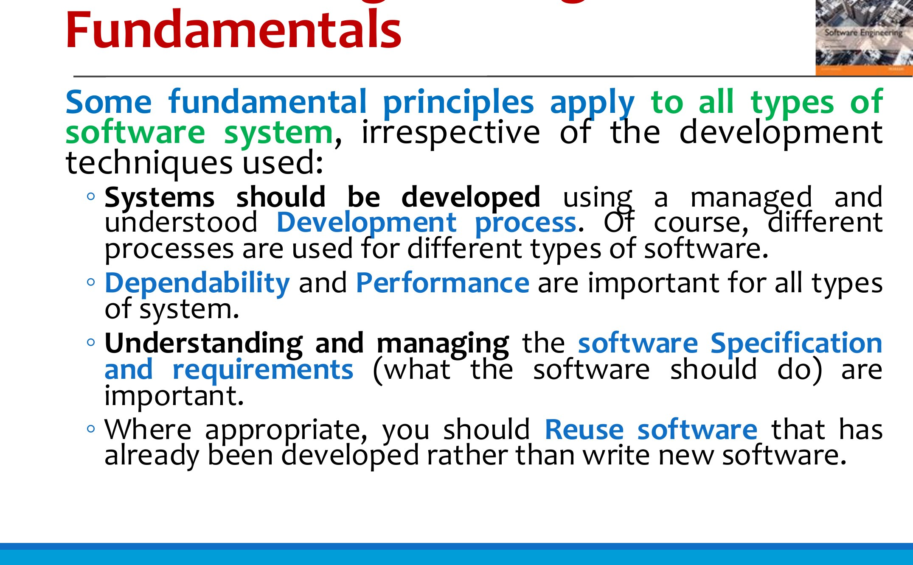
23
Exam weight ●○○ Low
Internet Software Engineering
Now a days, Web is a platform for running application, and organizations are increasingly developing web-based systems rather than local systems. Web services are specific functions or features of an application that can be accessed over the web or internet. For example, a weather app on your phone might use a web service to fetch the latest weather data from a server Cloud computing is a broader concept where entire applications and services are running on remote servers ("the cloud") rather than on a local computer. Users access these services over the internet and typically pay for what they use, rather than purchasing the software outright. For instance, Google Docs runs on the cloud, allowing you to edit documents online without needing to install any software on your compute.
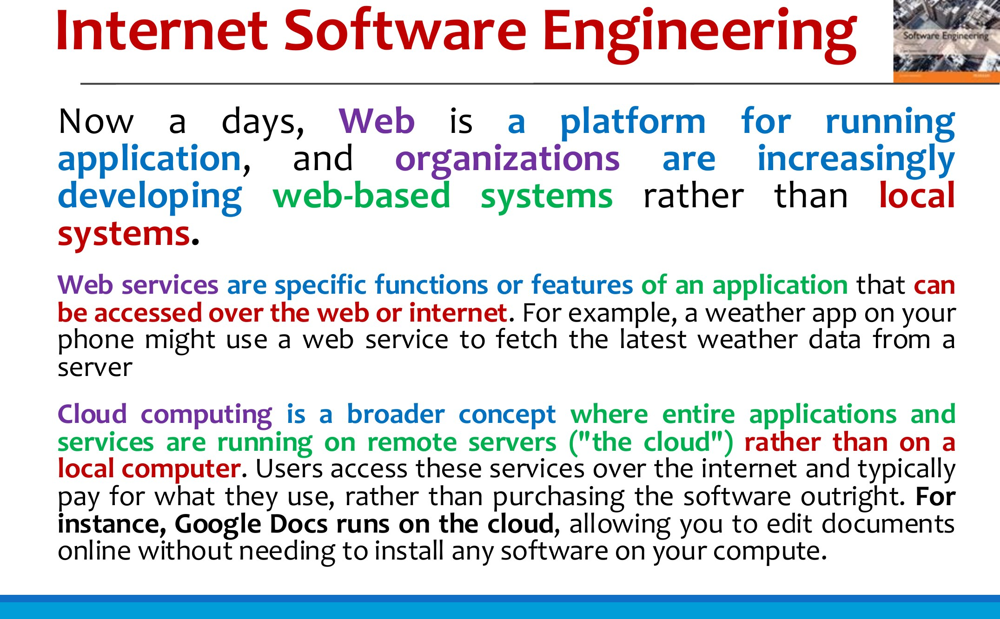
24
Exam weight ●○○ Low
Web-based Software Engineering
Web-based systems are complex distributed systems but the fundamental principles of software engineering discussed previously are as applicable to them as they are to any other types of system.
The fundamental ideas of software engineering apply to web-based software in the same way that they apply to other types of software system.
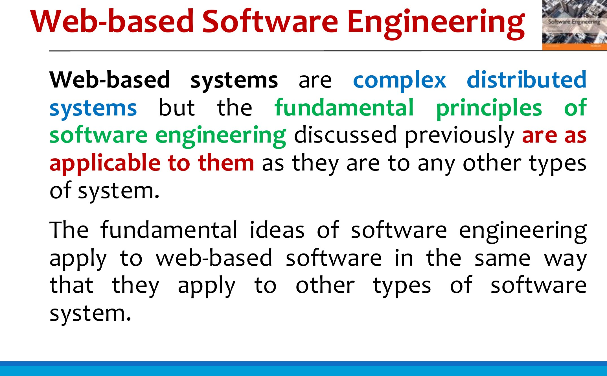
25
Exam weight ●○○ Low
Web Software Engineering
Software reuse
- Software reuse is the dominant approach for constructing web-based systems. When building these systems, you think about how you can assemble them from pre-existing software components and systems.
Incremental and agile development
- Web-based systems should be developed and delivered incrementally. It is now generally recognized that it is impractical to specify all the requirements for such systems in advance.
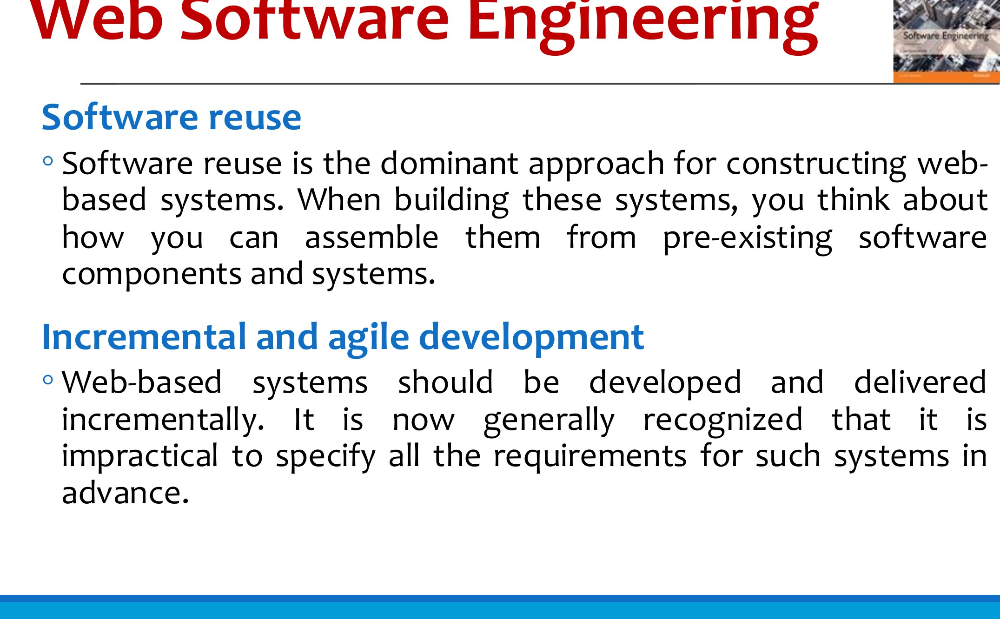
26
Exam weight ●○○ Low
Web Software Engineering
Service-oriented systems
- Service-oriented systems involve building software using Service-Oriented Software Engineering (SOSE). In this approach, software is composed of independent components known as web services. These web services are stand-alone, meaning each service performs a specific function and can operate independently, yet they can be combined and accessed over the web to create more complex applications. For example, a travel booking system might use separate web services for booking flights, hotels, and rental cars, each of which can be used independently or together within a single application.
Rich interfaces
- Interface development technologies such as AJAX and HTML5 have emerged that support the creation of rich interfaces within a web browser.
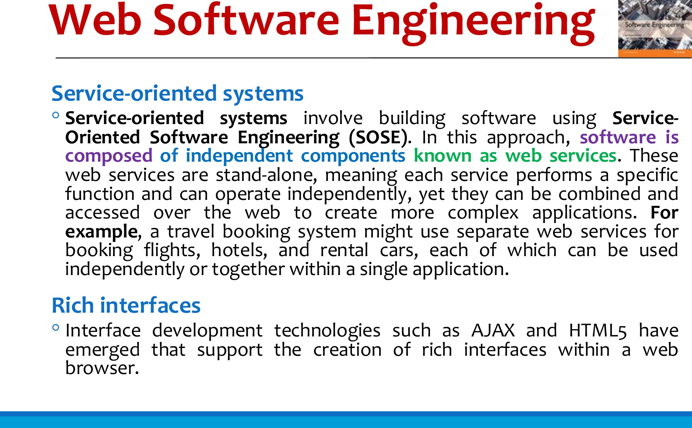
27
Exam weight ●○○ Low
Attributes of Web-based software systems (WebApps)
Network Intensiveness: A WebApp resides on a network and must serve the needs of a diverse community of clients.
Concurrency. A large number of users may access the WebApps at one time.
Unpredictable load. The number of users of the WebApp may vary by orders of magnitude from day to day.
Performance. If a WebApps user must wait too long, he or she may decide to go elsewhere.
Availability. Although expectation of 100% availability is unreasonable, users of popular WebApps often demand access on a “ 24/7/365 ” basis.
Data driven. The primary function of many WebApps is to use hypermedia to present text graphics, audio and vise content to the end-user.
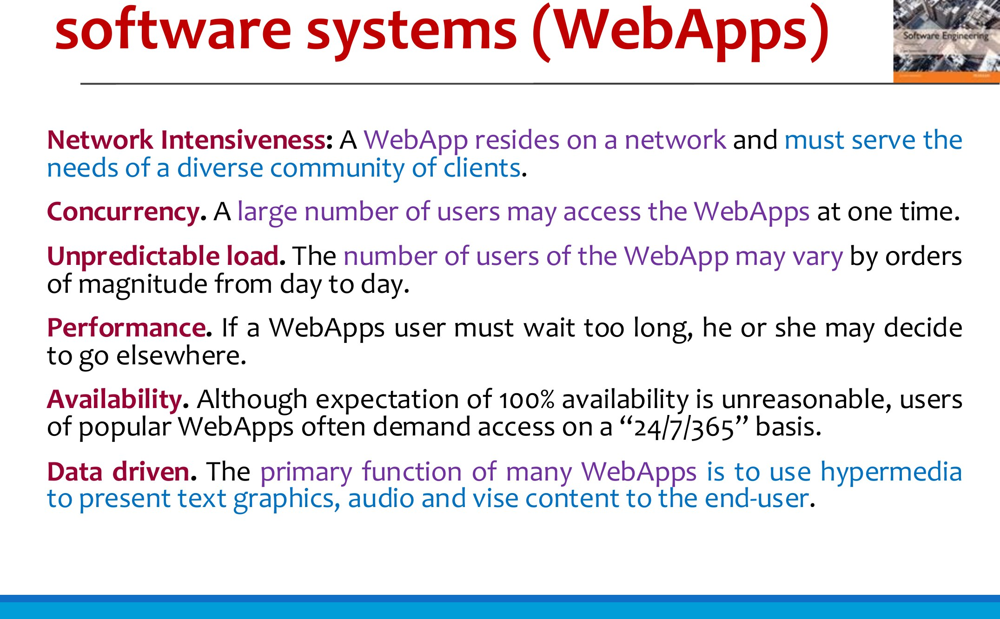
28
Exam weight ●○○ Low
Software Engineering – A Layered Technology
Any engineering approach (including software engineering) must rest on an organizational commitment to quality. Total quality management, six sigma and similar philosophical foster a continuous process improvement culture.
Process defines a framework that must be established for effective delivery of software engineering technology.
Software engineering methods provide the technical how-to ‘s for building software.
Software engineering tools provide automated or semi automated support for the process and the methods.
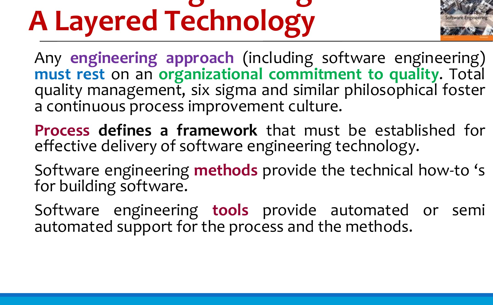
29
Exam weight ●●● High
- Layers: quality focus (bedrock) → process → methods → tools.
🎯 How this can come up · 1 question
MCQ
The foundation layer of software engineering is:
Correct: A quality focus.
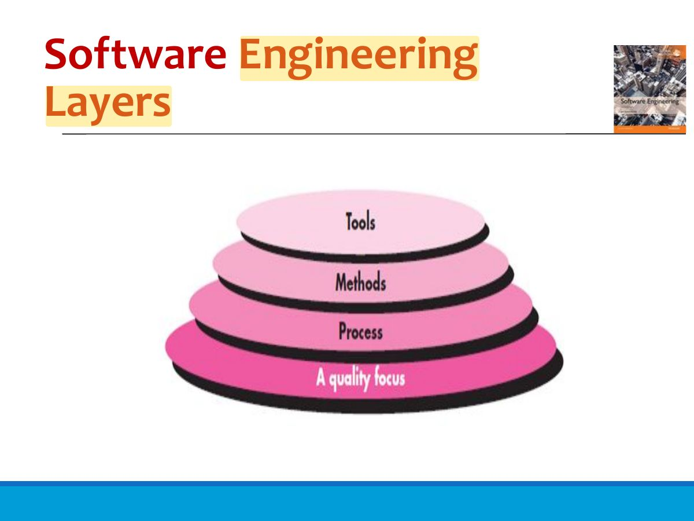
Exam weight ●○○ Low
The Software Process
Also known as Software Life Cycles. It mandates a phased approach to software development. It provides guidance on what must be created and when. It also guides on how to create and evaluate artifacts.
A process is a collection of activities, actions and tasks that are performed when some work product is to be created.
An activity strives to achieve a broad objective (e.g. communications with stakeholders) and is applied regardless of the application domain, size of the project, complexity of the effort, or degree of rigor with which software engineering is to be applied. Software Engineering activities are Software specification, software development, software validation and software evolution.
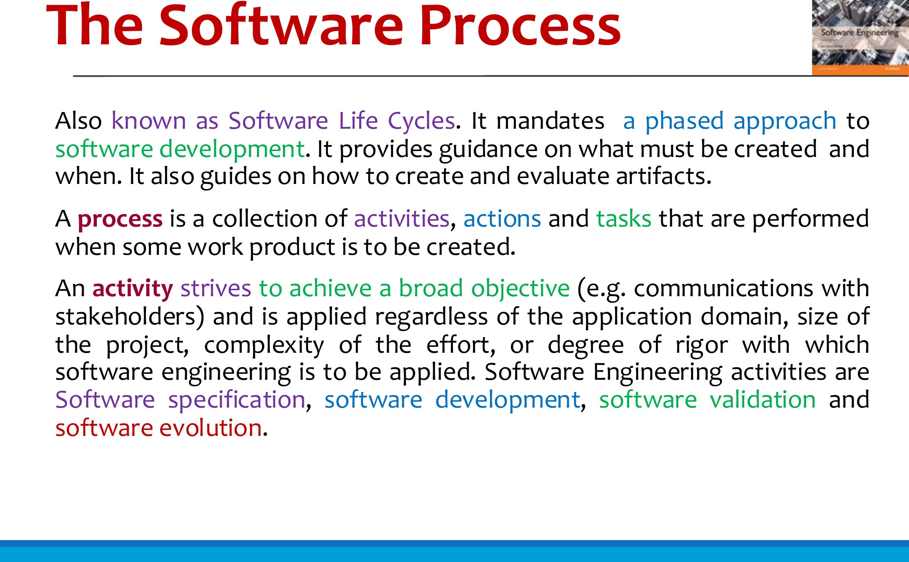
31
Exam weight ●○○ Low
The Software Process
An action (e.g. architectural design model) encompasses a set of task that produce a major work product.
A task focuses on a small, but well-defined objective (e.g. conducting a unit test) that produces a tangible outcome.
Software Process consists of framework and umbrella activities.
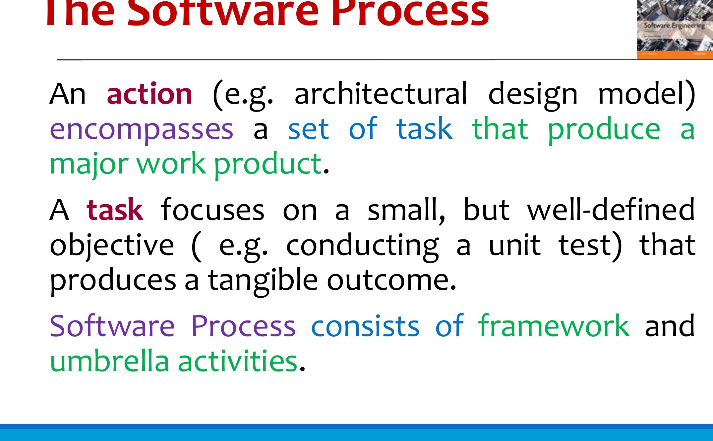
32
Exam weight ●○○ Low
A Process Framework
Process framework
Framework activities:
Core and fundamental activities that are part of every
software process.
work tasks work products milestones & deliverables QA checkpoints
Umbrella Activities:
These activities support the framework activities and are
ongoing throughout the software process
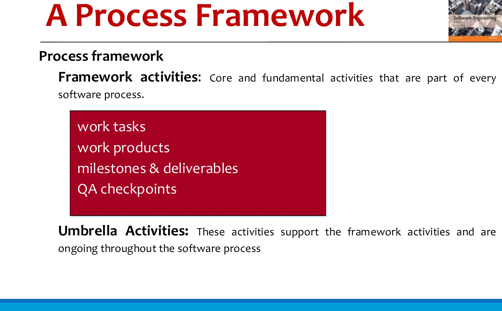
33
Exam weight ●●● High
- Generic framework activities: communication, planning, modeling, construction, deployment.
Memory trickC-P-M-C-D: Communication, Planning, Modeling, Construction, Deployment.
🎯 How this can come up · 1 question
MCQ
Which is NOT a generic framework activity?
Risk management is an umbrella activity.
Generic Software Process Framework
A generic process framework for software engineering encompasses five activities:
- Communication & Planning
- Software Specification: where customers and engineers define the software that is to be produced and the constraints on its operation
- Analysis of requirements
- Modeling (is the process of creating abstract representations of a system to better understand and communicate its structure and behaviour)
- Software Development:
- Design
- Construction
- Software Validation:
- Where the software is checked to ensure that it is what the customer requires
- Deployment & Software Evolution:
- where the software is modified to reflect changing customer and market requirements
Almost any software development process/life cycle can be descried in terms of these framework activities
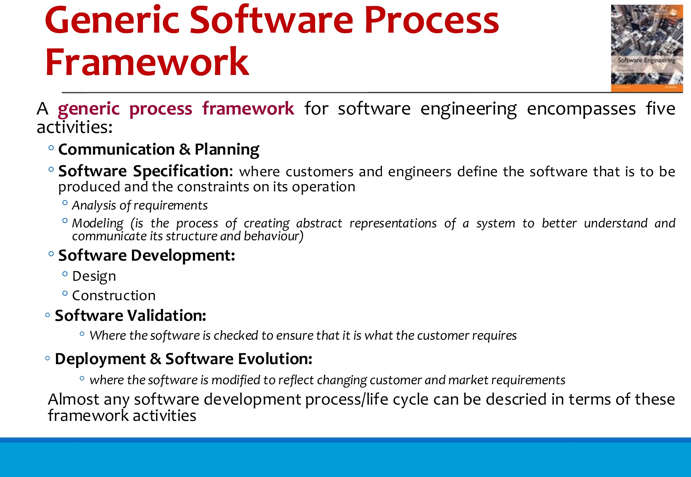
34
Exam weight ●○○ Low
Umbrella Activities
Software engineering process framework activities are complemented by a number off umbrella activities:
- Software Project Management (project tracking and control)
- Risk Management
- Software Quality Assurance
- Formal Technical Reviews
- Measurement
- Software Configuration Management
- Reusability Management
- Work Product preparation and production.
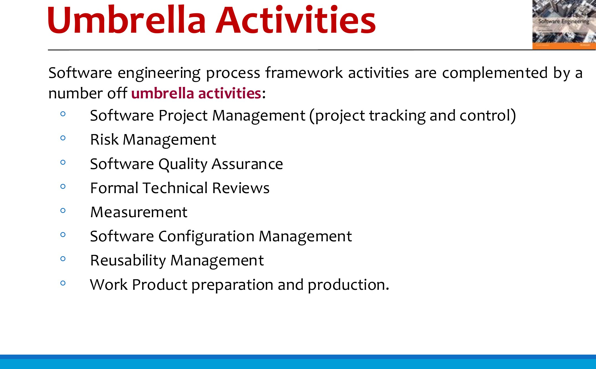
35
Exam weight ●●● High
- Umbrella activities run throughout: project tracking and control, risk management, quality assurance, technical reviews, measurement, configuration management, reusability management, work-product preparation.
Umbrella Activities
Software project tracking and control: a key project management skill is to know how to track real progress, not just effort It shows how to use tools
...
to assess the real progress being made Risk management: identify, evaluate, prevent risks related to activities of any organization.
Software quality assurance: a set of engineering processes to ensure that the developed software meets and complies with the defined or standardized quality specifications Technical reviews: is a form of peer review in which a team of qualified personnel examines the suitability of the software product.
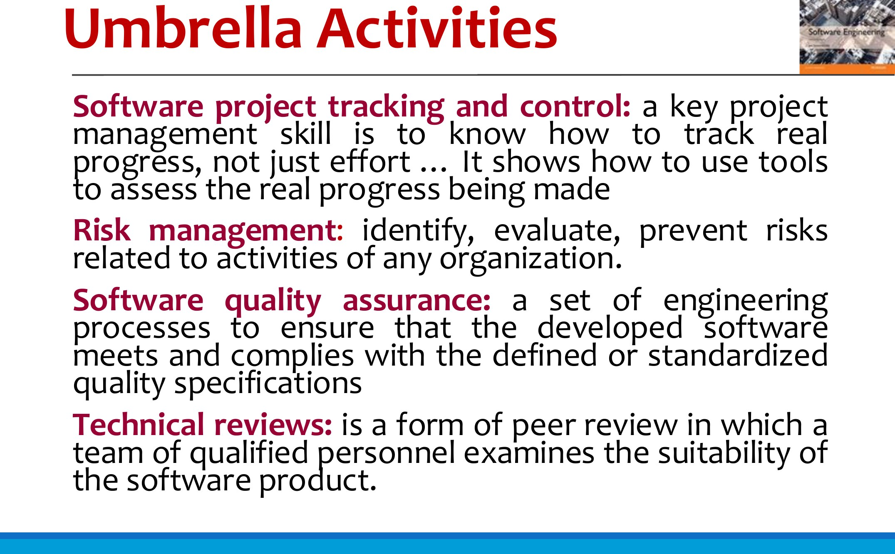
36
Exam weight ●○○ Low
Umbrella Activities
Measurement: is a discipline within SE to ensure that the delivered results are accurate, objective and repeatable.
Software configuration management: is a task of tracking and controlling changes in the software. It includes revision and control.
Reusability management: software specification, designs, test cases, data, prototypes, plans, documentation, frameworks are all candidates for reuse. Major advantage: increase software productivity and decrease software development time and cost. Work product preparation and production: encompasses the activities required to create a software such as models, documents.
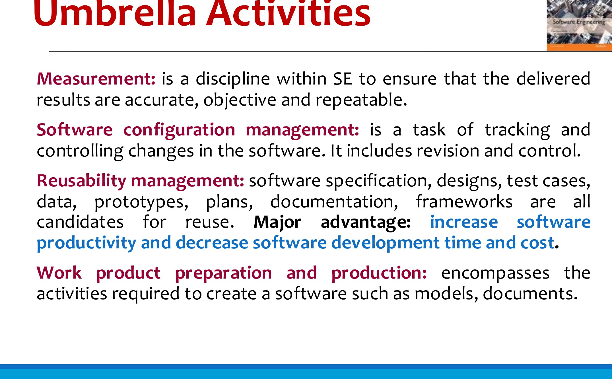
37
Exam weight ●○○ Low
Software Engineering Ethics
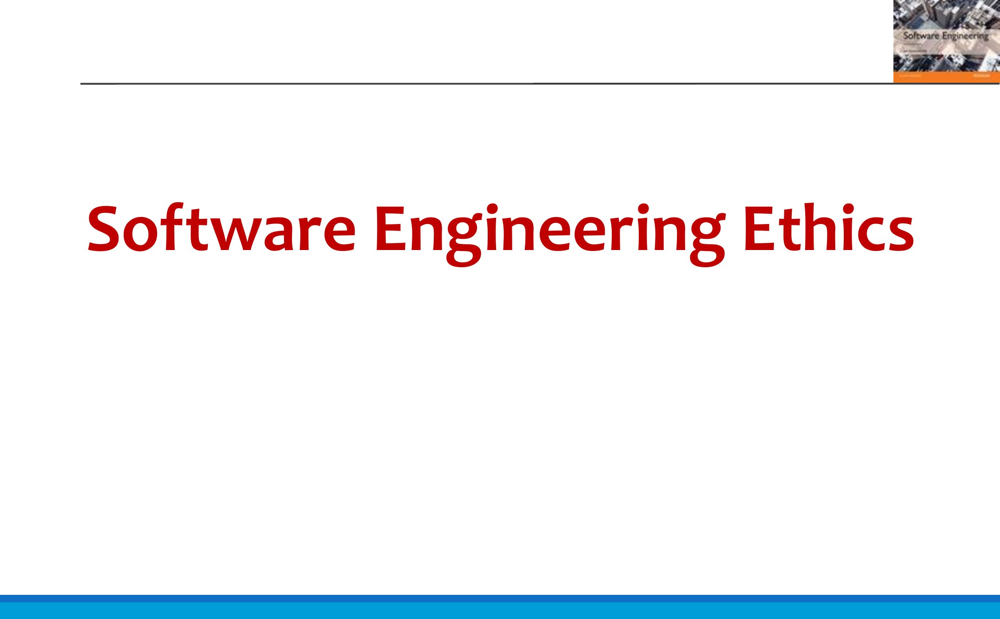
38
Exam weight ●○○ Low
Professional and Ethical Responsibilities in Software Engineering
CLO3: Demonstrate an understanding of professional and ethical responsibilities in Software Engineering
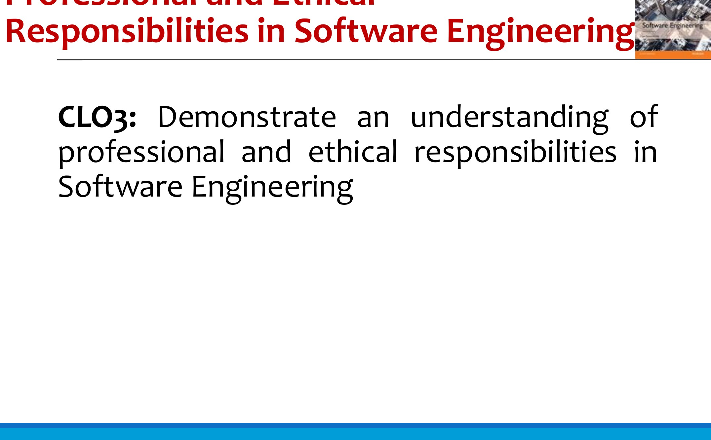
39
Exam weight ●○○ Low
Software Engineering Ethics
Software
engineering
involves
wider
responsibilities than simply the application of technical skills.
Software engineers must behave in an honest and ethically responsible way if they are to be respected as professionals.
Ethical behavior is more than simply upholding the law but involves following a set of principles that are morally correct.
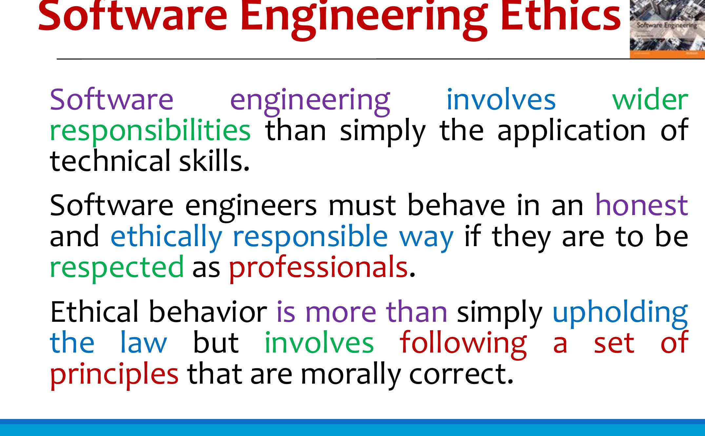
40
Exam weight ●○○ Low
Issues of Professional Responsibility
Confidentiality
- Engineers should normally respect the confidentiality of their employers or clients irrespective of whether or not a formal confidentiality agreement has been signed.
Competence
- Engineers should not misrepresent their level of competence. They should not pretend the skills or knowledge that they don't actually have. Also, they should avoid taking on work that is beyond their abilities or expertise, as this could lead to mistakes or problems..
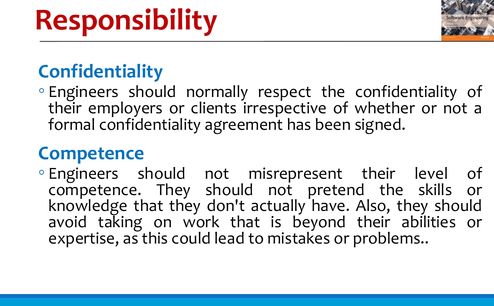
41
Exam weight ●○○ Low
- Professional responsibility: confidentiality, competence, intellectual property rights, computer misuse.
Issues of Professional Responsibility
Intellectual property rights
- Engineers should be aware of local laws governing the use of intellectual property such as patents, copyright, etc. They should be careful to ensure that the intellectual property of employers and clients is protected.
Computer misuse
- Software engineers should not use their technical skills to misuse other people’s computers. Computer misuse ranges from relatively trivial (game playing on an employer’s machine, say) to extremely serious (dissemination of viruses).
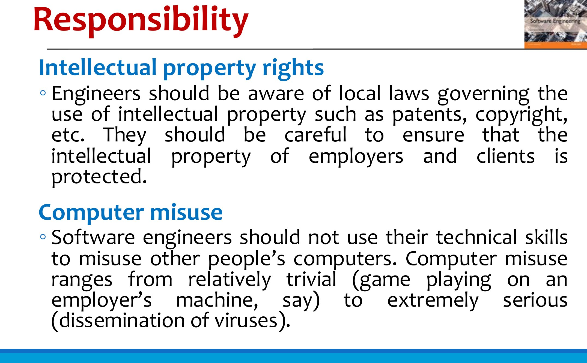
42
Exam weight ●○○ Low
Why should we have professional code of ethics?
- A code of ethics is essential to a profession; the code will provide an ethical starting point for the professionals and for others outside the profession.
- A code of ethics also ensures quality in treatment of members of the profession and those, the profession serves.
- A code of ethics provides a guide for dealing with ethical situations which arise in the course of the job.
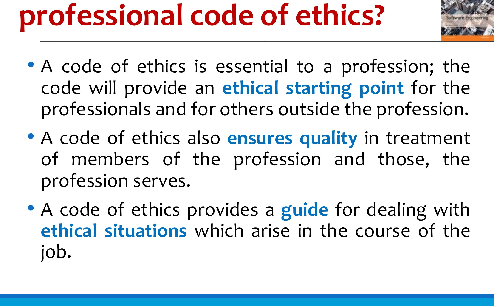
43
Exam weight ●○○ Low
Why should we have professional code of ethics?
A Professional Code of Ethics serves several functions:
- Defines and promotes a standard for external relations with clients and employers.
- Protects the group’s interests.
- Codifies members’ rights.
- Expresses ideals to aspire to.
- Offers lines in “gray areas” .
- These are not clear cut set of rules or policies for all situations, rather a set of statements of professional belief which should inform members of the profession about the viewpoints they should consider in making a decision.
- Not laws
- Not passed by public legislative bodies
- Not intended to encourage law suits or legal challenges
- Might help to resolve important questions in certain disputes.
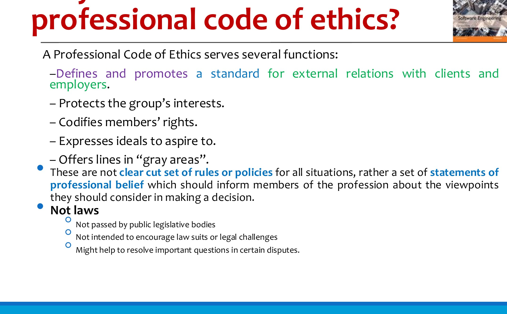
44
Exam weight ●○○ Low
Professional Ethics
- Additionally, a code of ethics communicates the ethical viewpoint of the profession to others, which the members of an organization or group must uphold.
- A professional code of ethics states the principles and core values that are essential to the work of a particular occupational group.
- Most organizations have their own internal code of practice that defines the professional ethics of a certain profession.
- Not complete ethical frameworks or algorithms/Not exhaustive checklists
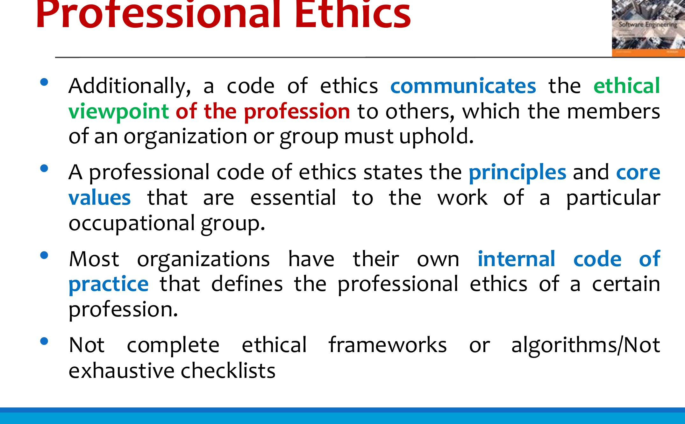
45
Exam weight ●○○ Low
ACM/IEEE Code of Ethics
The professional societies in the US have cooperated to produce a code of ethical practice.
Members of these organizations sign up to the code of practice when they join.
The Code contains eight Principles related to the behavior of and decisions made by professional software engineers, including practitioners, educators, managers, supervisors and policy makers, as well as trainees and students of the profession.
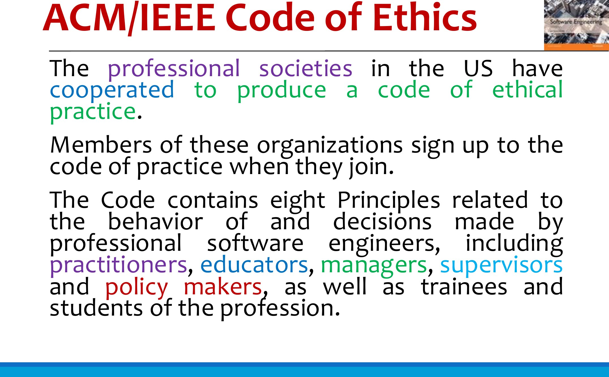
46
Exam weight ●●● High
- ACM/IEEE code: 8 principles: public, client and employer, product, judgment, management, profession, colleagues, self. Act in the PUBLIC interest first.
🎯 How this can come up · 1 question
MCQ
According to the ACM/IEEE code, software engineers shall act consistently with the interest of:
Correct: The public.
Rationale for the code of ethics
- Computers have a central and growing role in commerce, industry, government, medicine, education, entertainment and society at large.
- Software engineers are those who contribute by direct participation or by teaching, to the analysis, specification, design, development, certification, maintenance and testing of software systems.
- Because of their roles in developing software systems, software engineers have significant opportunities to do good or cause harm, to enable others to do good or cause harm, or to influence others to do good or cause harm. To ensure, as much as possible, that their efforts will be used for good, software engineers must commit themselves to making software engineering a beneficial and respected profession.
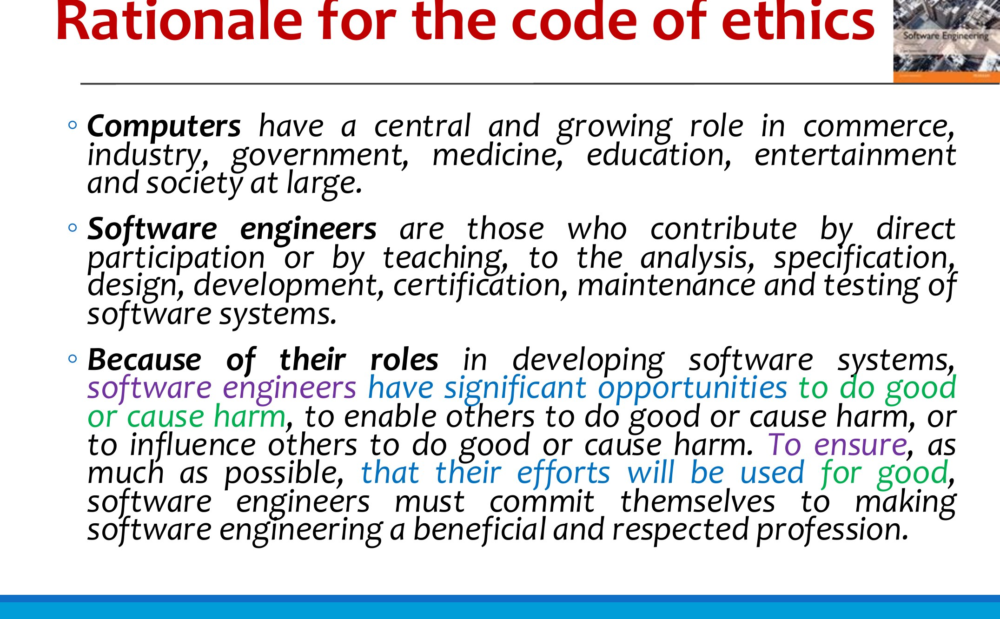
47
Exam weight ●○○ Low
The ACM/IEEE Code of Ethics
ACM stands for( Association for Computing Machinery) IEEE Stands for ( Institute of Electrical and Electronics Engineers) Software Engineering Code of Ethics and Professional Practice ACM/IEEE-CS Joint Task Force on Software Engineering Ethics and Professional Practices PREAMBLE The short version of the code summarizes aspirations at a high level of the abstraction; the clauses that are included in the full version give examples and details of how these aspirations change the way we act as software engineering professionals. Without the aspirations, the details can become legalistic and tedious; without the details, the aspirations can become high sounding but empty; together, the aspirations and the details form a cohesive code.
Software engineers shall commit themselves to making the analysis, specification, design, development, testing and maintenance of software a beneficial and respected profession. In accordance with their commitment to the health, safety and welfare of the public, software engineers shall adhere to the following Eight Principles:
Note: Here aspirations refers to the high-level principles, values, or ideals that the code of ethics seeks to uphold
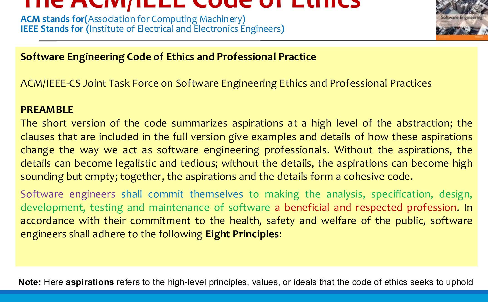
48
Exam weight ●○○ Low
Ethical principles
1 PUBLIC - Software engineers shall act consistently with the public interest.
- CLIENT AND EMPLOYER - Software engineers shall act in a manner that is in the best interests of their client and employer consistent with the public interest.
3.PRODUCT - Software engineers shall ensure that their products and related modifications meet the highest professional standards possible.
4.JUDGMENT - Software engineers shall maintain integrity and independence in their professional judgment.
5.MANAGEMENT - Software engineering managers and leaders shall subscribe to and promote an ethical approach to the management of software development and maintenance.
6.PROFESSION - Software engineers shall advance the integrity and reputation of the profession consistent with the public interest.
- COLLEAGUES - Software engineers shall be fair to and supportive of their colleagues.
8.SELF - Software engineers shall participate in lifelong learning regarding the practice of their profession and shall promote an ethical approach to the practice of the profession.
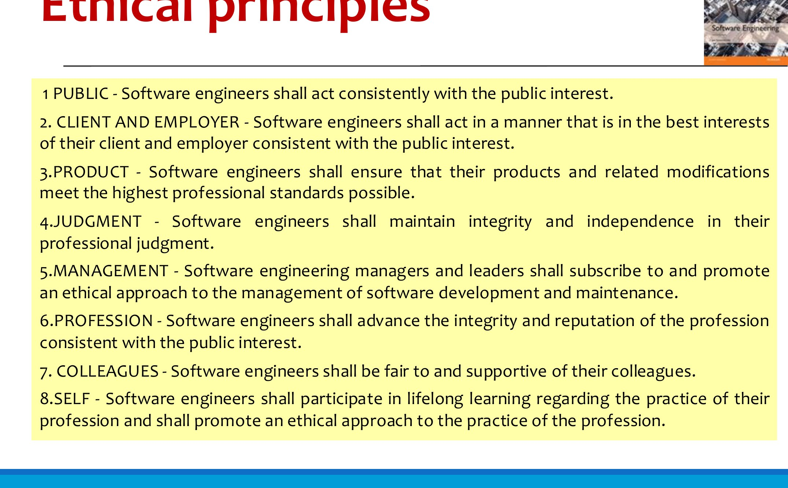
49
Exam weight ●○○ Low
Ethical Dilemma
- individual’s
- Disagreement in principle with the policies of management’s senior management.
- Your employer acts in an unethical way and releases a safety-critical system without finishing the testing of the system.
- Participation in the development of military
- weapons systems or nuclear systems.
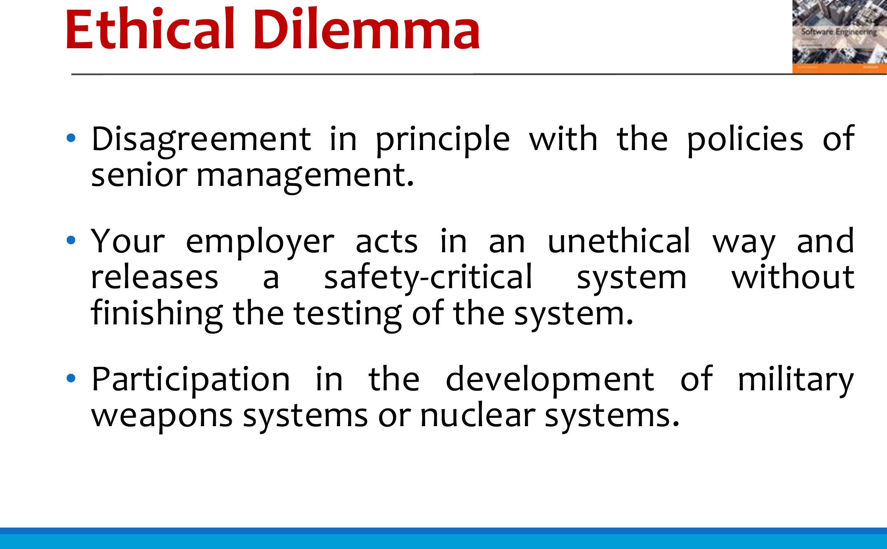
50
Exam weight ●○○ Low
- Ethical dilemmas: disagreeing with management policy, being asked to release unsafe software, working on military systems.
Case studies
- A personal insulin pump
- An embedded system in an insulin pump used by diabetics to maintain blood glucose control.
- A mental health case patient management system
- Mentcare. A system used to maintain records of people receiving care for mental health problems.
- A wilderness weather station
- A data collection system that collects data about weather conditions in remote areas.
- iLearn: a digital learning environment
- A system to support learning in schools
51
Exam weight ●○○ Low
Insulin pump control system
Insulin pump control system Collects data from a blood sugar sensor and calculates the amount of insulin required to be injected.
Calculation based on the rate of change of blood sugar levels.
Sends signals to a micro-pump to deliver the correct dose of insulin.
Safety-critical system as:
low blood sugars can lead to brain malfunctioning, coma and death; high-blood sugar levels have long-term consequences such as eye and kidney damage.
52
Exam weight ●○○ Low
- Case studies: insulin pump (safety-critical embedded), Mentcare (patient information system).
Exam weight ●○○ Low
Essential high-level requirements
The system shall be available to deliver insulin when required.
The system shall perform reliably and deliver the correct amount of insulin to counteract the current level of blood sugar.
The system must therefore be designed and implemented to ensure that the system always meets these requirements.
If the requirements for the insulin pump control system are not met, the violation of the ACM Code of Ethics primarily involves:
1. Principle 1 (PUBLIC) The failure to ensure the correct and timely delivery of insulin poses a direct threat
to patients' safety, health, and even life. Since this is a safety-critical system, engineers are obligated to prioritize the public interest by ensuring the system is designed and implemented correctly.
- Principle 3 (PRODUCT) If the system does not reliably deliver the correct amount of insulin, it fails to meet the highest professional standards required for such a safety-critical product. Ensuring these requirements is fundamental to maintaining the integrity and effectiveness of the product
54
Exam weight ●○○ Low
Mentcare: A patient information system for mental health care
A patient information system to support mental health care is a medical information system that maintains information about patients suffering from mental health problems and the treatments that they have received.
Most mental health patients do not require dedicated hospital treatment but need to attend the specialist clinics regularly where they can meet a doctor who has detailed knowledge of their problems.
To make it easier for patients to attend, these clinics are not just run in hospitals. They may also be held in local medical practices or community centres.
55
Exam weight ●○○ Low
Mentcare
Mentcare is an information system that is intended for use in clinics.
It makes use of a centralized database of patient information but has also been designed to run on a PC, so that it may be accessed and used from sites that do not have secure network connectivity.
When the local systems have secure network access, they use patient information in the database but they can download and use local copies of patient records when they are disconnected.
56
Exam weight ●○○ Low
Mentcare goals
To generate management information that allows health service managers to assess performance against local and government targets.
To provide medical staff with timely information to support the treatment of patients.
57
Exam weight ●○○ Low
Exam weight ●○○ Low
Key features of the Mentcare system
Individual care management
- Clinicians can create records for patients, edit the information in the system, view patient history, etc. The system supports data summaries so that doctors can quickly learn about the key problems and treatments that have been prescribed.
Patient monitoring
- The system monitors the records of patients that are involved in treatment and issues warnings if possible problems are detected.
Administrative reporting
- The system generates monthly management reports showing the number of patients treated at each clinic, the number of patients who have entered and left the care system, number of patients sectioned, the drugs prescribed and their costs, etc.
59
Exam weight ●○○ Low
Mentcare system concerns
Privacy
- It is essential that patient information is confidential and is never disclosed to anyone apart from authorized medical staff and the patient themselves.
Safety
- Some mental illnesses cause patients to become suicidal or a danger to other people. Wherever possible, the system should warn medical staff about potentially suicidal or dangerous patients.
- The system must be available when needed otherwise safety may be compromised and it may be impossible to prescribe the correct medication to patients.
60
Exam weight ●○○ Low
Key points
Software engineering is an engineering discipline that is concerned with all aspects of software production.
Essential software product attributes are maintainability, dependability and security, efficiency and acceptability.
The high-level activities of specification, development, validation and evolution are part of all software processes.
The fundamental notions of software engineering are universally applicable to all types of system development.
61
Exam weight ●○○ Low
Key points
There are many different types of system and each requires appropriate software engineering tools and techniques for their development.
The fundamental ideas of software engineering are applicable to all types of software system.
Software engineers have responsibilities to the engineering profession and society. They should not simply be concerned with technical issues.
Professional societies publish codes of conduct which set out the standards of behaviour expected of their members.
62
Exam weight ●○○ Low
No slides match this filter.